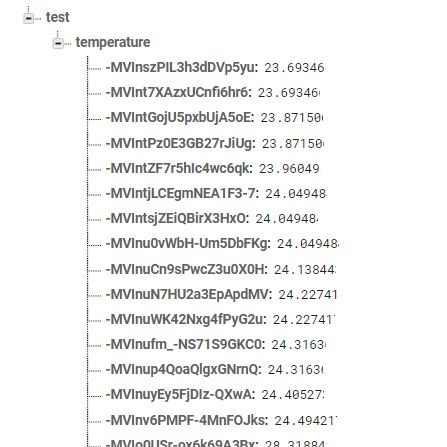
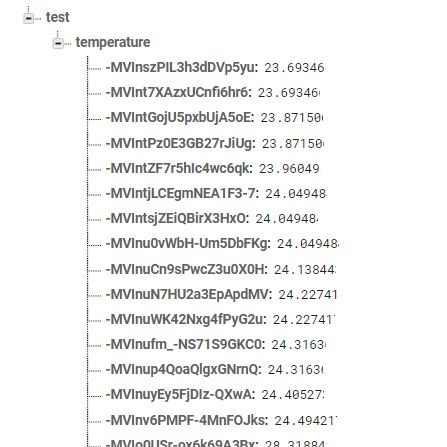

An introduction to the team
Jan 20, 2021
So who are the brains behind Bee's Knees? Let's introduce ourselves. This group is made up of three Mechatronics Engineering students, Raveena D'Souza, Tia Headworth, and J Reinstein. Our goal is to address surgery recovery pertaining to the knee joints. Over the course of the next couple months, we'll be working through the design, prototype, and final model of our system, and post updates.
Update 1: Purchases
Jan 22, 2021
To begin prototyping, we've purchased some materials! Some of these include an Arduino and a kit, some sensors (thermistors and encoders), and a battery pack. These materials will help us build the prototype for the Bee's Knees project.
Update 2: Temperature sensing
Feb 10, 2021
In this post you can see our temperature sensing circuit. The thermistor we chose is a medical grade thermistor designed for skin surface measurements. This part of our project utilizes a Wheatstone bridge configuration to measure the resistance of our thermistor. Using the table from the datasheet of our sensor we produced a line of best fit to relate the resistance to the temperature and used this relationship to calculate our temperature readings. In a simple test you can see our temperature readings rise in response to a warm breath on the sensor.
Update 3: Arduino code
Feb 20, 2021
For the electrical portion of our project, we will be using an Arduino to collect data, clean the data, and send it along to Firebase. Using libraries such as the Firebase library and the SPI serial library, we have collected sensor data from the encoders and the temperature sensors to send to Firebase. The sensor data is cleaned and calibrated on the Arduino side before sending it over to the Firebase Realtime Database for visualization.
Update 4: Firebase data storage
Feb 24, 2021
In this post, you can see that we've configured Firebase to receive data from the Arduino by using a Firebase library. The temperature data collected from our skin temperature sensor is calibrated and uploaded to the Firebase Realtime Database. This database ensures that updates are realtime on the dashboard, and that any changes that occur in the database are reflected almost instantly. The flow from end to end of this system starts when the user puts the brace on their knee. The temperature data is recorded at certain times in the day and this data is automatically sent to Firebase via the Arduino code. The dashboard then instantly updates the graphs based on the new data that's presented. This allows us to have a full end to end connection, and brings us one step closer to our fully finished prototype and model
 

Update 5: Mounting and calibration
Mar 5, 2021
A vital part of our design is the mounting of the device onto a knee brace! This week we've made the circuitry cleaner so that it can easily be placed onto the brace. Once it was on the brace, we calibrated it so that the right angles of flexion and extension were noted for the knee. In our next few weeks left of this design project, we hope to thoroughly test and validate that what we've built works property and add insights to our dashboard.
Update 6: Authentication
Mar 10, 2021
Authentication is very important for any healthcare service. For this project we have a dashboard that patients and physical therapists can use to ensure that everything is healing well and if there are any concerns, they can discuss this with their patients during post-op appointments. Authentication is used here so that users log into their own accounts and see information pertinent to their own recovery. Physical therapists log in and are able to access the information for all their patients so it is vital to have authentication working properly.
Update 7: Prototype
Mar 23, 2021
We've built our device! After mounting everything and building the web application fully, we are done with the main part of the building and development phase, and will be transitioning into the testing and validation phase. Below is an image of what the brace currently looks like with everything mounted.

Update 8: Testing
Apr 8, 2021
We've tested our device! Over the past two weeks, we've recorded our range of motion and skin surface temperature at 9 AM and 7 PM to ensure that everything is being calculated and calibrated properly. We've verified that these values are accurate using skin temperatures and a protractor to ensure that everything is working as expected. Insights and trends have been added to the dashboard so now patients and therapists can view all the pertinent information for them.
Update 9: Final remarks
Apr 14, 2021
This is officially our last day of working on this device! Over the past 8 months, we have gone from a vague problem statement to a full-fledged prototype that works fully. We are very proud of the all the hardwork it took to get here and would like to thank our advisors Professor Baris Fidan and Professor Ayman El-Hag for helping us throughout the entire process! :)
About Us


We are a team of Mechatronics Engineering students passionate about addressing the issues with joint recovery after surgery.